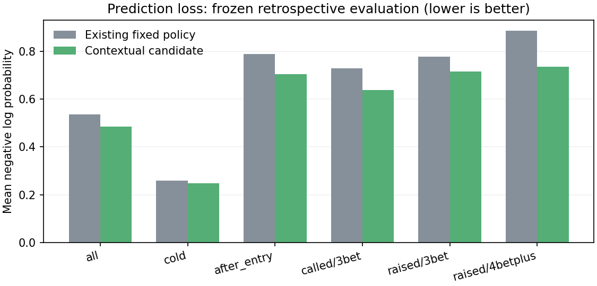
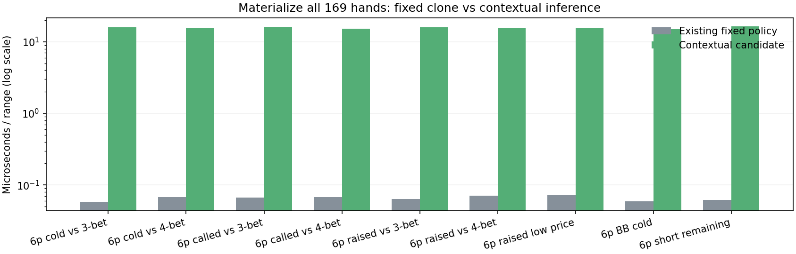
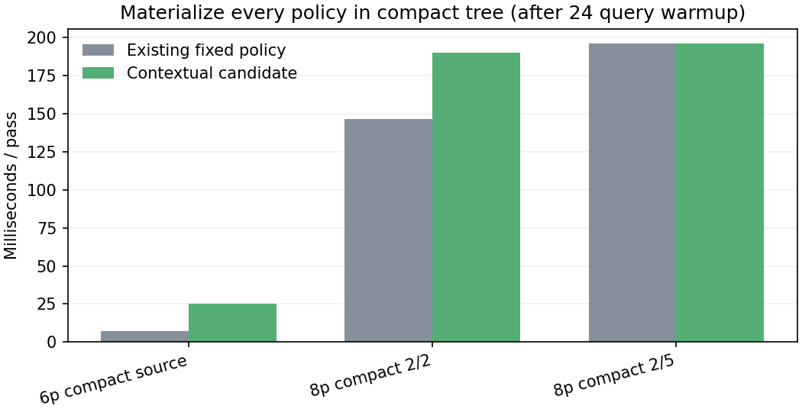
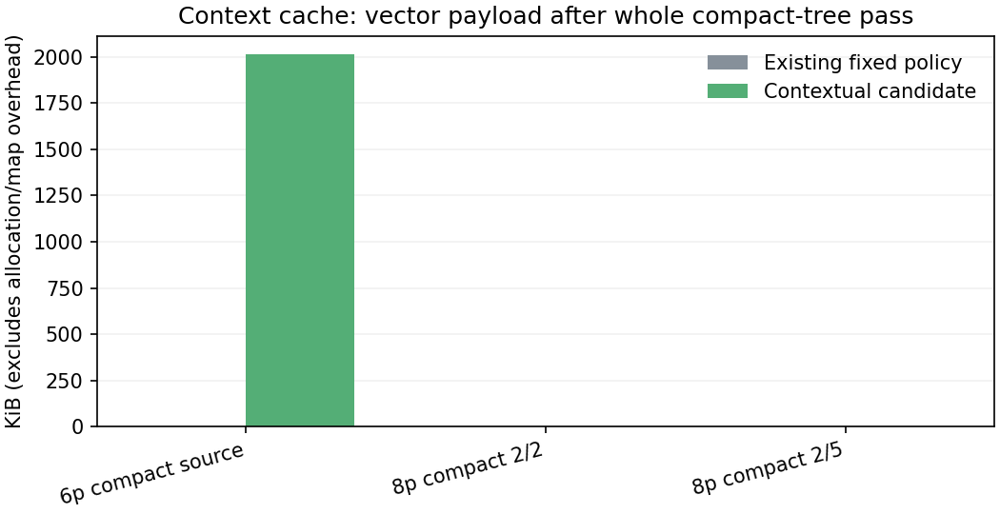
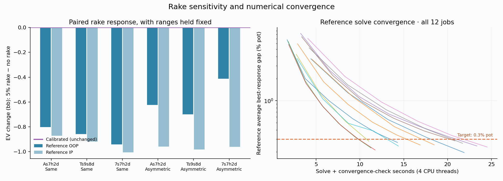

Opponent behavior
9.3% lower log loss
Retrospective comparison on 2,351 later re-raise decisions. Runtime and preview now use the same history and price inputs.
Prediction evidence →Retrospective comparison on 2,351 later re-raise decisions. Runtime and preview now use the same history and price inputs.
Prediction evidence →All 169 hands checked in each context. Separate inference, cache, policy compilation and tree measurements.
All 11 metric charts →Matched ranges and paired rake settings expose rake sensitivity and total-value accounting issues.
Method and findings →Better probability predictions carry additional computation. Neither chart measures a win-rate improvement or a solving speedup.


First measurements are baseline/candidate comparisons. Run history retains repeat measurements; differences between runs may reflect host load rather than an improvement.
The source-format fixture exercises contextual inference. The compact $2/2 and $2/5 fixtures check that unsupported formats retain their existing policies.


These compact fixtures are not the user's saved full trees. Memory is explicitly allocated vector payload, not total process memory. Metric definitions and limitations.
Changing requested rake leaves the current calibrated preflop estimate unchanged. Matched postflop references show a material change in combined player value. This is a controlled diagnostic, not an all-flop error measurement.

Three selected boards × two range fixtures × two rake settings. Production continuation pricing is unchanged. A weighted flop audit and joint value/rake model are the next research steps.